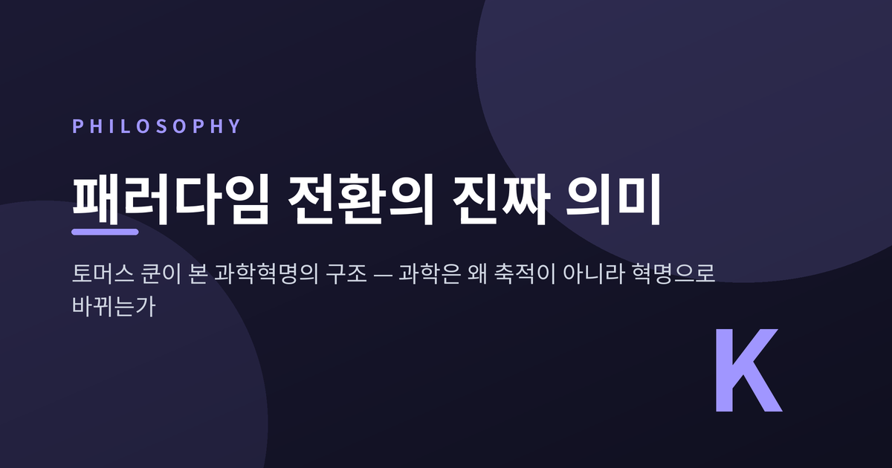
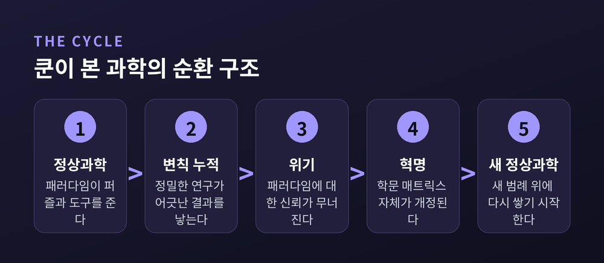
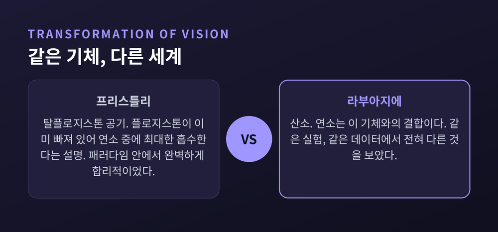
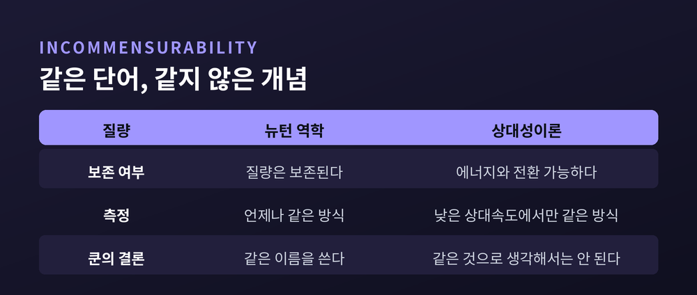
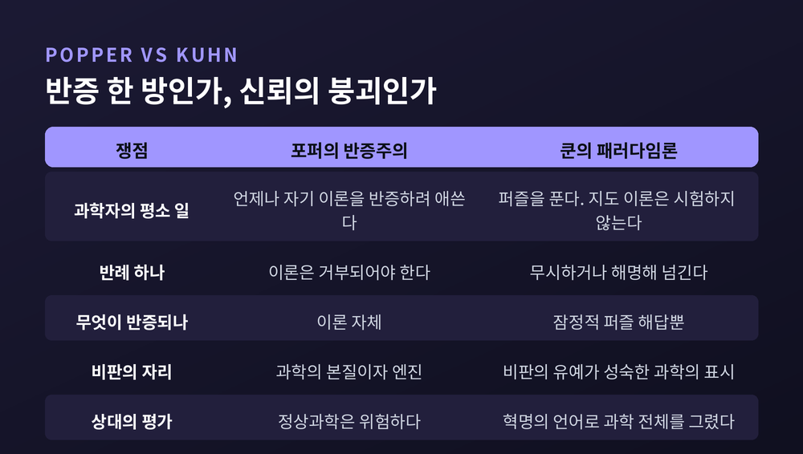
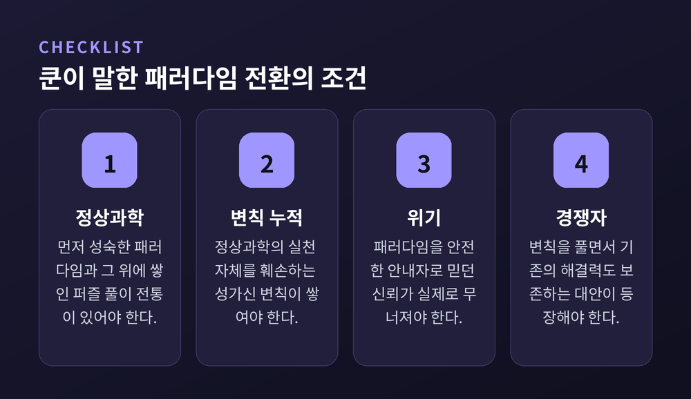

이번 글에서는 토머스 쿤의 패러다임 전환을 정리해 보겠습니다. 회의실에서 흔히 쓰이는 그 단어가 원래 무엇을 뜻했는지, 왜 쿤은 과학이 축적이 아니라 혁명으로 바뀐다고 보았는지를 따라가 봅니다.
먼저 세 줄로 요약하겠습니다.
토머스 새뮤얼 쿤은 1922년에 태어나 1996년에 세상을 떠났습니다. 출발은 철학이 아니라 물리학이었습니다. 1943년 하버드를 최우등으로 졸업했고, 1949년 고체물리학에 양자역학을 적용하는 연구로 박사학위를 받았습니다.
전환점은 강의실에서 왔습니다. 당시 하버드 총장 제임스 코넌트가 만든 교양 과학 과목을 맡으면서, 쿤은 처음으로 과학 원전을 깊이 읽게 됩니다.
그리고 1947년 여름, 아리스토텔레스의 『자연학』 앞에서 그는 막혔습니다. 운동에 관한 아리스토텔레스의 서술이 도무지 말이 되지 않았습니다. 스탠퍼드 철학사전은 이 당혹감을 쿤 사상의 형성적 경험이라고 적습니다.
문제는 아리스토텔레스가 아니라 쿤 쪽에 있었습니다. 그는 뉴턴의 가정과 범주를 들고 2천 년 전 텍스트를 읽고 있었습니다. 아리스토텔레스를 그 시대의 언어로 읽어야 한다는 것을 깨달은 순간, 갑자기 모든 것이 이해되었습니다.
이 경험이 『과학혁명의 구조』의 씨앗이 됩니다. 1957년 『코페르니쿠스 혁명』을 거쳐, 1962년에 책이 나옵니다.
출간 지면이 흥미롭습니다. 이 책은 오토 노이라트와 루돌프 카르납이 편집한 「국제 통합과학 백과사전」 총서의 한 권으로 나왔습니다. 논리실증주의 진영이 기획한 총서 안에서, 그 진영의 과학관을 흔든 책이 나온 셈입니다.
쿤의 출발점은 소박한 관찰입니다. 과학자는 평소에 세계관을 뒤집지 않습니다. 문제를 풉니다.
쿤은 이 평상시의 과학을 '정상과학'이라 부르고, 그 활동을 '퍼즐 풀이'라고 이름 붙였습니다. 퍼즐이라는 말은 사소하다는 뜻이 아닙니다. 직소 퍼즐을 맞추는 사람처럼 답이 존재한다는 것을 미리 확신한 채 작업한다는 뜻입니다.
그 확신을 주는 것이 패러다임입니다. 패러다임의 기능은 두 가지로 정리됩니다. 풀어야 할 퍼즐을 공급하고, 그 퍼즐을 풀 도구를 제공합니다.
여기서 오해가 하나 풀립니다. 쿤은 축적을 부정한 사람이 아닙니다. 정상과학의 시기에는 이론과 도구와 가치와 형이상학적 전제가 고정된 채 유지되고, 바로 그 덕분에 퍼즐 해답이 누적적으로 쌓입니다. 표면만 보면 우리가 아는 '과학은 벽돌을 쌓는 일'이라는 그림과 다르지 않습니다.
문제는 그 국면이 전부가 아니라는 점입니다.

가장 인상적인 대목이 여기입니다.
정상 연구는 지나치게 상세하고 초점이 좁습니다. 그렇기 때문에 필연적으로 변칙적인 실험 결과와 이론적 결과를 만들어냅니다. 스탠퍼드 철학사전의 표현대로, 정상과학은 변칙을 만들어낼 수밖에 없습니다.
느슨한 학문은 변칙을 만들지 못합니다. 오차 범위 안에 다 묻히기 때문입니다. 자기 발밑을 갈라놓을 균열은 자기가 성실했기 때문에 생깁니다.
다만 변칙 하나가 이론을 무너뜨리지는 않습니다. 쿤이 관찰한 과학자들은 변칙을 무시하거나 해명해 넘깁니다. 심각해지는 것은 특별히 성가신 변칙이 누적될 때입니다. 여기서 '특별히 성가시다'는 것은 정상과학의 실천 자체를 훼손한다는 뜻입니다.
신뢰가 무너지면 위기가 옵니다. 그리고 위기에 대한 가장 흥미로운 반응은 학문 매트릭스 자체를 개정하려는 시도입니다.
여기에 쿤의 가장 논쟁적인 문장이 붙습니다. 그 결정은 합리적으로 강제되지 않습니다. 어떤 개정안을 택할지도 강제되지 않습니다. 그래서 혁명 국면은 경쟁에 활짝 열립니다.
추상적인 이야기를 사례 하나가 정리해 줍니다. 화학 혁명입니다.
18세기 화학의 패러다임은 플로지스톤이었습니다. 타는 물질에는 플로지스톤이라는 것이 들어 있고, 연소란 그것이 빠져나가는 과정이라는 설명입니다.
조지프 프리스틀리는 연소를 놀랍도록 잘 지지하는 기체를 얻어냅니다. 그리고 그것에 '탈플로지스톤 공기'라는 이름을 붙입니다. 논리는 일관됩니다. 이 기체는 플로지스톤이 이미 빠져 있으니, 연소 중에 플로지스톤을 최대한 흡수할 수 있다는 것입니다.
앙투안 라부아지에는 같은 기체를 보고 산소라고 불렀습니다.
쿤의 문장은 이렇습니다. 라부아지에는 프리스틀리가 탈플로지스톤 공기를 본 곳에서 산소를 보았다. 쿤은 이를 '시각의 변형'이라고 표현했습니다.
같은 실험이었습니다. 같은 기체였습니다. 다른 세계였습니다.
프리스틀리가 무능했던 것이 아닙니다. 그는 자기 패러다임 안에서 완벽하게 합리적이었습니다. 데이터가 그를 설득하지 못한 이유는, 데이터가 이미 패러다임의 언어로 읽히고 있었기 때문입니다.

쿤이 첫 책에서 보여준 것은 두 가지였습니다.
첫째, 아리스토텔레스 과학은 진짜 과학이었습니다. 프톨레마이오스 천문학에 종사하던 사람들은 미신에 빠진 것이 아니라 전적으로 합리적인 작업을 하고 있었습니다.
둘째, 코페르니쿠스 모형이 천문학자들에게 호소력을 가진 이유는 과학 바깥이 아니라 안에 있었습니다. 스탠퍼드 철학사전은 세 가지를 꼽습니다.
프톨레마이오스 체계의 임시방편 장치들, 특히 이심점을 없앨 수 있었습니다. 행성의 역행 운동을 만족스럽게 설명했습니다. 그리고 프톨레마이오스 체계에서는 설명되지 않던 우연의 일치들, 예컨대 태양과 내행성 주전원 중심의 정렬을 해소했습니다.
쿤은 태양 숭배의 부흥 같은 외부 요인도 언급합니다만, 강조점은 분명합니다. 천문학자들이 일차적으로 반응한 것은 과학 내부의 문제였습니다.
이 대목은 쿤을 오해로부터 지키는 방어선이기도 합니다. 쿤은 과학을 유행이나 정치로 환원한 사람이 아닙니다. 그는 근대 과학에서 논쟁의 결과를 결정하는 요인이 거의 언제나 과학 내부에 있으며, 구체적으로는 경쟁하는 아이디어들의 퍼즐 풀이 능력에 있다고 명시했습니다.
혁명이 지나가면 용어의 의미가 이동합니다. 쿤은 이것을 공약불가능성이라 불렀습니다.
가장 선명한 예가 '질량'입니다. 쿤은 이렇게 씁니다. 뉴턴적 질량은 보존되지만 아인슈타인적 질량은 에너지와 전환 가능하다. 낮은 상대속도에서만 둘은 같은 방식으로 측정될 수 있으며, 그때조차 둘을 같은 것으로 생각해서는 안 된다.
물리학 교과서는 뉴턴 역학을 상대성이론의 근사적 특수 사례로 소개합니다. 그러니 후대 이론이 진리에 더 가깝다고 말할 수 있을 것 같습니다. 쿤은 그 비교 자체가 성립하지 않는다고 봅니다. 번역이 되지 않는데 무엇을 견주겠느냐는 것입니다. 이 사실은 같은 단어를 계속 쓴다는 점과, 역사를 매끄럽게 다듬는 서술 방식에 의해 가려집니다.
쿤은 이 전환을 오리-토끼 그림에 비유했습니다. 같은 선 뭉치가 어느 순간 오리에서 토끼로 바뀌는 그 경험 말입니다.
다만 여기서 한계를 함께 적어야 공정합니다. 쿤 본인이 확신하지 못했습니다. 게슈탈트 전환이 단순한 유비인지, 아니면 마음의 작동 방식에 관한 더 일반적인 진실을 예시하는 것인지 자신도 모르겠다고 인정했습니다.

쿤과 포퍼는 1965년 런던 대학교 국제 과학철학 콜로키움에서 맞붙었습니다. 주 조직자는 임레 라카토슈였고, 심포지엄 의장은 포퍼였습니다.
두 사람은 과학에서 혁명이 중요하다는 데는 동의했습니다. 갈린 곳은 '비판'의 자리였습니다.
포퍼의 그림에서 과학자는 언제나 자기 이론을 반증하려 애쓰는 사람입니다. 반례 하나면 이론은 거부되어야 합니다.
쿤의 관찰은 정반대였습니다. 정상과학 시기의 과학자는 지도 이론을 시험하지도, 확증하려 하지도 않습니다. 변칙을 반증으로 여기지도 않습니다. 포퍼적으로 반증될 수 있는 것은 잠정적 퍼즐 해답뿐입니다.
쿤은 포퍼가 "과학이라는 사업 전체를, 오직 그 간헐적인 혁명적 부분에만 적용되는 용어로 특징지었다"고 비판했습니다. 자기 설명을 받아들이면 포퍼의 견해가 거꾸로 뒤집힌다고도 했습니다. 비판적 담론의 포기야말로 과학으로의 이행을 표시한다는 뜻이기 때문입니다.
포퍼는 「정상과학과 그 위험들」로 응수했습니다. 제목이 곧 논지입니다. 비판을 유예하는 과학자는 위험하다는 것입니다.
이 논쟁의 기록은 라카토슈와 앨런 머스그레이브가 엮은 『비판과 지식의 성장』(1970)에 담겼습니다. 같은 해에 『구조』 제2판도 후기를 달고 나왔습니다.
라카토슈는 이후 절충안을 내놓습니다. 견고한 핵과 보호대와 발견법을 갖춘 '연구 프로그램'들이 경쟁하며 과학이 전진한다는 구도였습니다.

초기 철학계의 반응은 적대적이었습니다. 1964년 더들리 셰이퍼의 서평은 쿤의 상대주의적 함축을 겨냥했고, 그 뒤 논의의 판을 정했습니다.
혐의의 논리는 이렇습니다. 규칙을 따르는 것이 합리성의 필요조건이라면, "과학자들은 결정할 때 규칙을 쓰지 않는다"는 말은 곧 "과학은 비합리적이다"라는 말이 됩니다.
스탠퍼드 철학사전의 반박은 단정적입니다. 그 비난은 과녁을 한참 벗어났다는 것입니다. 어떤 인지 과정이 합리성 규칙의 적용 결과가 아니라고 해서, 그 과정이 비합리적이라는 뜻은 아닙니다. 한 가족의 두 사람이 닮았다고 알아보는 일도 규칙으로 환원되지 않지만, 누구도 그것을 비합리적이라 하지 않습니다.
쿤 자신도 과학자에게 패러다임을 바꿀 좋은 이유가 있다고 보았습니다. 다만 그 이유들이 기계적인 결정 절차로 압축되지 않을 뿐입니다. 여러 요인을 저울질해야 하고, 합리적인 사람들이 그 가중치를 다르게 매길 수 있습니다.
용어의 모호함은 실제 약점이었습니다. 마거릿 마스터먼은 1965년 콜로키움에서 쿤이 '패러다임'을 스무 가지가 넘는 뜻으로 쓴다고 지적했습니다. 쿤은 1970년 제2판 후기에서 이를 받아들여, 기호적 일반화와 모형과 가치와 범례를 요소로 하는 '학문 매트릭스'라는 용어를 제안합니다.
그리고 여기서 가장 자주 왜곡되는 지점을 짚겠습니다. 쿤은 과학의 진보를 부정하지 않았습니다. 그는 과학이 진보한다고 명시했습니다. 대체 패러다임은 기존 패러다임이 못 풀던 변칙을 풀어야 하고, 동시에 선행 패러다임의 문제 해결력을 상당 부분 보존해야 합니다.
그가 거부한 것은 하나입니다. 그 진보를 '진리에 다가감'으로 번역하는 일입니다.
'쿤 손실'이라는 개념이 여기 붙습니다. 후대 과학은 이전 패러다임이 잘 설명하던 현상을 설명하지 못한 채로 남겨두기도 합니다. 얻는 것이 잃는 것보다 많으니 진보이되, 순수한 덧셈은 아닙니다.
과학은 벽돌을 쌓는 일이 아니라, 집을 헐고 다시 짓는 일에 가깝습니다.
여기서 조금 씁쓸한 이야기를 하겠습니다.
예전에 '패러다임'은 과학사와 과학철학의 좁은 울타리 안에서 매우 특정한 조건을 가리키는 말이었습니다. 지금은 거의 모든 변화를 가리키는 말이 되었습니다.
1990년대 후반, '패러다임 전환'은 마케팅 화법을 타고 버즈워드로 떠올랐습니다. 위키백과의 표현을 빌리면, 이 말은 수많은 무감각한 비즈니스 컨퍼런스 파워포인트 속에서 진부한 상투어의 지위에 올랐습니다.
가장 뼈아픈 아이러니는 이것입니다. 이 용어는 자기 고향에서 탈출한 뒤, 오늘날 정작 과학의 변화를 서술하는 데는 거의 쓰이지 않습니다. 대신 경제와 정치에서 대중교통과 위생에 이르기까지 아무 데나 동원됩니다. 철학자 마틴 코언은 이 관념을 자연과학에서 사회과학으로, 다시 예술과 정치 수사로 번져나간 일종의 지적 바이러스로 묘사합니다.
쿤의 표현이 그가 의도한 의미에서 너무 멀리 표류해서, 더는 그에게 귀속시키지 말아야 한다는 지적까지 나옵니다.
기준은 사실 어렵지 않습니다. 쿤에게 패러다임 전환은 성숙한 정상과학이 있고, 그 안에서 변칙이 축적되고, 신뢰가 무너져 위기가 오고, 경쟁 패러다임이 등장할 때 벌어지는 일이었습니다. 회의실에서 선포되는 대부분의 '패러다임 전환'은 이 중 어느 것도 갖추지 않은 그냥 큰 변화입니다.

정리하면 이렇습니다.
쿤이 흔든 것은 과학의 권위가 아니라, 과학에 대한 우리의 서사였습니다. 교과서는 과학을 고정된 사실 덩어리로 그리고, 학생은 그 전통을 평가하는 대신 받아들이도록 배웁니다. 쿤은 그 매끄러운 이야기 뒤에 무엇이 있는지 보여주려 했을 뿐입니다.
그가 남긴 진짜 질문은 이것이라고 생각합니다. 나는 지금 무엇을 보고 있는가, 아니면 내 패러다임이 보게 해준 것을 보고 있는가.
프리스틀리는 평생 성실했고 끝까지 틀리지 않았습니다. 자기 패러다임 안에서는 말입니다.
과학이 대단한 이유가 무엇이냐고 물으신다면, 결코 틀리지 않기 때문이 아니라 자기 발밑을 갈라놓을 변칙을 스스로 만들어내는 유일한 방식이기 때문이라고 답하겠습니다.